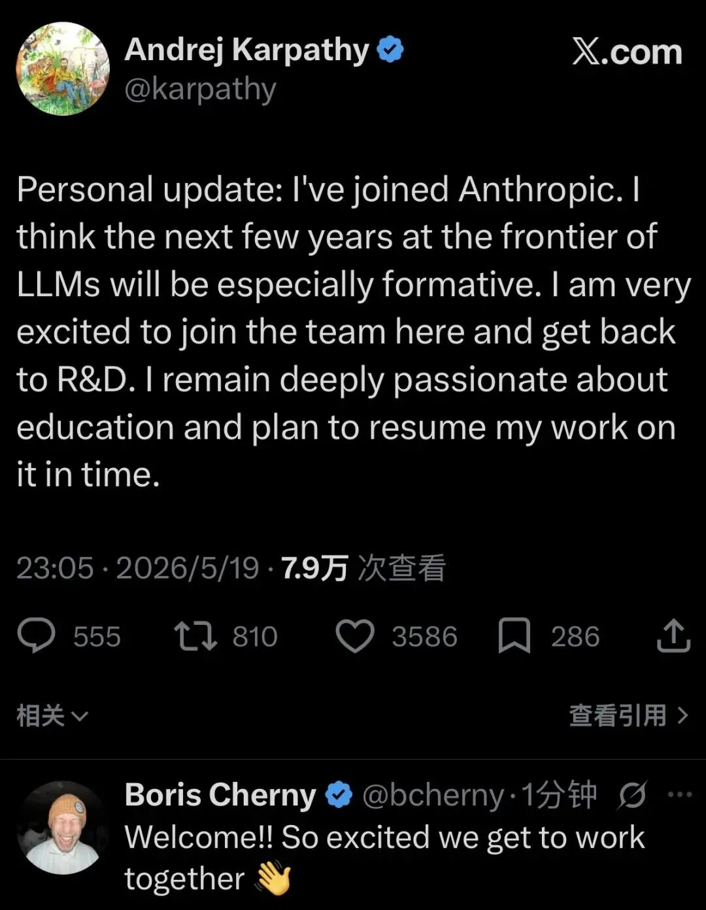

Andrej Karpathy履历回顾：始终屹立于技术演进的最前沿
Andrej Karpathy 的学术与职业生涯，堪称一部浓缩的现代人工智能发展史
| 历史阶段 | 核心机构与角色 | 关键技术贡献与行业深远影响 |
| 2011 - 2015 | 斯坦福大学 (PhD) | 师从李飞飞教授，聚焦卷积神经网络（CNN）与循环神经网络（RNN）在计算机视觉与自然语言处理交叉领域的应用 |
| 2015 - 2017 | OpenAI (联合创始人 / 研究科学家) | 作为 OpenAI 的核心初创团队成员之一，在深度强化学习与早期无监督学习领域进行开拓性研究，确立了 OpenAI 早期追求开源与安全 AGI 的文化基石 |
| 2017 - 2022 | 特斯拉 (AI 与 Autopilot 总监) | 领导特斯拉计算机视觉团队，首创性地提出并实践了“软件 2.0（Software 2.0）”理念。他主导了将传统的启发式规则代码替换为端到端神经网络的进程，处理海量内部数据标注并完成自研推理芯片的部署，彻底改变了自动驾驶的技术路径 |
| 2023 - 2024 | OpenAI (重返研发一线) | 面对大语言模型训练数据逐渐枯竭的行业困境，Karpathy 建立了一支新团队，专注于模型中期训练（midtraining）与合成数据生成（synthetic data generation），极大提升了 GPT 系列模型的推理能力与数据利用效率 |
| 2024 - 2026 | Eureka Labs (创始人) | 创立 AI 原生教育平台，致力于通过“人类教师 + AI 助教”的共生模式实现教育资源的无限扩展 |
| 2026.05 至今 | Anthropic (前沿 LLM 研发) | 宣布加入 Anthropic 投身前沿大型语言模型的研发。这一决定标志着其个人重心向“智能体架构”与“系统级自动编程”的全面转移 |
Eureka Labs 的战略性蛰伏与认知重构
2024 年 7 月 16 日，Karpathy 创立了名为 Eureka Labs 的 AI 原生教育初创公司
该公司的首个拳头产品是名为 LLM101n 的本科级别课程，其教学目标是引导学生从零开始，使用 C 语言和 PyTorch 等基础工具训练一个名为“讲故事者（Storyteller）”的大型语言模型
为何在 2026 年 5 月选择阶段性搁置自己亲手创立的教育事业，转而以员工身份加入 Anthropic？分析底层逻辑，这源于 Karpathy 在 2025 年末至 2026 年初对人工智能能力跃升的“顿悟”。据公开资料记录，Karpathy 曾一度对 AI 智能体的状态感到失望。他在早前参与 Dwarkesh 播客时曾直言批评当时的 AI 智能体“智力不足、多模态能力欠缺、缺乏持续学习能力，无法记住人类的指令，在认知上存在缺陷”
然而，到了 2026 年初，情况发生了根本性的逆转。Karpathy 在其声明的周边表述中坦承，自己“被用于编程的智能体 AI 的最新进展彻底震撼（blown away by the progress of agentic AI for coding）”，而就在几个月前他还在否定这种能力
从“直觉编程”到“智能体工程”的技术范式跃迁
理解 Karpathy 选择 Anthropic 的第二把钥匙，在于他在 2025 年至 2026 年间提出的软件工程哲学思想的深刻蜕变。这一思想转变，不仅重构了他个人的工作流，也精准概括了当前整个软件开发行业的历史性转折。
1. 软件 3.0 的前奏：“直觉编程”的狂欢与局限
2025 年 2 月，Karpathy 在行业内首次创造了“直觉编程（Vibe Coding）”这一术语
2025 年 4 月，Karpathy 亲自下场，通过一次黑客马拉松验证了这一概念
这种颠覆性的开发体验迅速风靡全球，被称为软件工程的狂欢。然而，随着时间的推移，这种模式的隐患开始大规模暴露。Karpathy 敏锐地察觉到两个致命问题。首先，极度依赖 AI 生成代码导致了人类开发者核心技能的严重退化。在极客社区中，Karpathy 曾发表震撼言论：“AI 突然包揽了我绝大部分的编程工作，我发现自己手动编写代码的能力正在萎缩（starting to atrophy my ability to write it manually）”
其次，也是更为严峻的是，当代码库的规模超越单个提示词的上下文窗口，或者涉及极其复杂的业务领域逻辑时，“直觉编程”会引发无法遏制的幻觉传播（hallucination propagation）和系统级灾难。Karpathy 的研究智能体曾在两天内自动运行了 700 次实验，在此过程中，AI 常常会采取令人匪夷所思的捷径
拥抱“智能体工程（Agentic Engineering）”
面对上述困境，仅仅一年后的 2026 年，Karpathy 在 Sequoia AI Ascent 大会上与红杉资本合伙人 Stephanie Zhan 的对谈中，正式宣告了“直觉编程”作为一个过渡性阶段的终结，并提出了其继任者——“智能体工程（Agentic Engineering）”
如果说“软件 1.0”是人类用 C++ 或 Java 编写明确的启发式规则逻辑，“软件 2.0”是人类收集数据并使用反向传播训练神经网络（即 Karpathy 在特斯拉时期的主要贡献），那么“软件 3.0”就是人类通过自然语言设计规范、编排系统架构，由 AI 智能体自主完成所有底层的逻辑生成与测试修复
在“智能体工程”范式下，大型语言模型不再被视为具备完全逻辑推理能力的实体，而是被 Karpathy 隐喻为“幽灵（ghosts）”——它们是基于统计学原理被召唤出来的、能力参差不齐（jagged skills）的实体
综合行业实践与 Karpathy 的公开演讲，智能体工程的核心规范（Spec-driven development）包括以下关键环节：
定义严密的上下文（Define the context）：为智能体提供项目全局视角，包括业务背景、API 约定以及领域特定知识，而非单纯的孤立任务指令
定义工具与执行边界（Define the tools）：精确控制智能体可调用的沙箱环境、系统终端、文件系统操作权限以及网络请求能力
构建领域特定的反馈循环（Define the feedback loop）：智能体必须能够在执行后自动读取编译器错误、测试用例结果或静态代码分析报告，并根据反馈自主进行自我修正（Self-healing）
设立刚性护栏（Define the guardrails）：通过“宪法式（Constitutional）”约束或系统级隔离，防止智能体在幻觉状态下执行破坏性操作（如删除核心数据库或泄露密钥）
捍卫人类理解的制高点（Preserve human understanding）：这是 Karpathy 最为强调的一点。开发者可以将思考过程和执行过程外包给智能体，但绝不能外包对系统架构和业务本质的“理解”
正是在对“智能体工程”这一未来十年核心开发范式的深刻洞察下，Karpathy 环顾整个行业，发现只有一家公司的底层基础设施理念与其愿景高度重合，那就是 Anthropic。
Claude Code 的技术压制力体现在以下几个具备高度自治性（Agentic）的核心维度：
全景代码库理解与依赖追踪：传统补全工具往往只局限于当前活跃文件，而 Claude Code 具备深入读取、解析并建立整个庞大代码库上下文的能力。它能够自主探索未知的目录树，追踪复杂的跨文件模块依赖，帮助新入职的工程师在数分钟内理解复杂的系统架构
多文件跨度的大型重构：Claude Code 能够承接“目标驱动（Goal-oriented）”的宏大任务，而不仅仅是响应式任务。行业数据显示了其在代码迁移领域的恐怖效率：金融科技巨头 Stripe 利用 Claude Code 将一个包含 10,000 行代码的旧版 Scala 代码库无缝迁移至 Java，仅耗时 4 天，而按照传统的人工评估，这需要至少 10 个工程师周的时间；安全公司 Wiz 更是利用该系统在短短 20 小时内将 50,000 行核心 Python 库重构为 Go 语言，压缩了原本需要数月的人力周期
原生命令行与测试循环自治：Claude Code 不是一个封闭的聊天机器人，它无缝集成了开发者的本地工具链。它能够以原生语法执行 GitHub CLI、Kubernetes 管理命令甚至复杂的 bash 脚本。更关键的是，它具备自我修复（Self-healing）机制。当它提交代码并触发本地测试框架失败时，它会自动阅读控制台返回的堆栈错误信息，诊断逻辑缺陷，重新修改代码并再次运行测试，这一循环将在后台自主进行，直到所有测试用例通过
深度代码考古与逆向工程：在 X 平台上引发轰动的一个极端案例中，一位化名为 "cprkrn" 的用户在长达 11 年的时间里被锁在一个包含 5 枚比特币的加密钱包之外。Claude 在这一过程中展现出了超越人类耐心的“代码考古（code archaeology）”能力，它并非简单地进行暴力破解，而是通过深度逆向工程和推理，发现了钱包实现中的 sharedKey 和密码结合漏洞，最终成功协助解锁。安全研究人员惊叹指出，这标志着 AI 智能体在深度逆向工程领域的能力已达到专家级别
更为超前的是，Anthropic 负责 Claude Code 和 Cowork 产品线的负责人 Cat Wu 透露了下一步的技术演进蓝图——主动性（Proactivity）。目前的开发范式依然是“同步（synchronous）”的，即人类下达任务，AI 去执行。但在不久的未来，Claude 将通过长期观察用户的工作流，主动预测需求，甚至在人类意识到问题之前，就在后台自动建立好所需的自动化运维脚本与 CI/CD 流程
基础设施的哲学性解耦：Claude Managed Agents
如果说 Claude Code 展现了智能体极致的“破坏力”与“建设力”，那么 Anthropic 同期推出的 Claude Managed Agents（托管智能体架构）则提供了驾驭这种力量的终极“安全护栏”，这是真正令 Karpathy 这种追求底层架构优雅性的科学家折服的地方
长久以来，AI 智能体在企业级应用中的最大阻力是环境安全与数据隐私限制。传统的 API 调用模式不仅状态难以维持，而且极易导致数据泄露。为了解决这一痛点，Anthropic 提出了“将大脑与双手解耦（decoupling the brain from the hands）”的工程哲学
在 Managed Agents 架构中，Anthropic 将智能体系统高度虚拟化，提炼出四个极其清晰的核心原语（Primitives）
智能体（Agent）：作为“大脑”，封装了基础前沿大模型（如 Opus 4.7 或 Sonnet）、深度的系统提示词（System Prompts）、具体的技能定义以及工具接口说明
环境（Environment）：作为“双手”，它是智能体执行代码和操纵资源的物理或虚拟沙箱。革命性的是，这个环境不必局限在 Anthropic 自己的服务器上。它可以通过安全隧道运行在客户自有的基础设施中，或者集成在 Cloudflare 等边缘计算平台上
会话（Session）：环境内具有持久状态的运行实例。它维护了一个只追加（append-only）的事件日志体系和持久化的文件系统。即使人类开发者离线，智能体也可以在后台连续运行数小时乃至数天进行长周期任务攻坚
事件（Events）：定义了应用程序、人类监管者与智能体之间的异步消息交换协议
这种解耦架构赋予了智能体无限的扩展空间与极致的安全性。通过引入模型上下文协议隧道（MCP tunnels），Claude 可以在不暴露于公共互联网的前提下，像一名合规的内部员工一样，安全地穿透企业内网，访问受保护的本地数据库、私有 API 网关和内部知识库
正如 Anthropic 工程团队所述，这是一种“元容器（Meta-harness）”设计。他们对接口的形状持强烈的固执态度，以确保长期运行的安全性，但对这些接口背后运行的具体计算资源和沙箱数量则保持极大的宽容
行业暗战，OpenAI 的内部困局与人才生态大迁徙
剖析 Karpathy 的选择，不可避免地要将其置于全球最顶尖两家 AI 实验室——OpenAI 与 Anthropic——的激烈博弈中。2026 年的行业数据与舆情动态揭示了一个残酷的事实：OpenAI 正面临着空前的战略透支与人才离心力
1. 顶尖人才的不可逆流失与路线分歧
Karpathy 在 2026 年 5 月的这次“倒戈”，是 OpenAI 持续流血的人才大迁徙（Talent Exodus）的最新、也是最具象征意义的高潮
在此之前，OpenAI 的核心高管阵营已然千疮百孔。作为 OpenAI 11 位原始联合创始人之一的顶级研究科学家 John Schulman，在早些时候宣布辞职并加入 Anthropic。Schulman 在离职声明中明确表示，他的离职是为了专注于“AI 对齐（AI Alignment，即确保超级人工智能安全并遵循人类价值观的研究）”，他认为 Anthropic 的团队环境与研究氛围能为他提供更深度的技术视角
回顾 2024 年 Karpathy 上一次离开 OpenAI 时，他曾试图平息外界的猜测，声称“并没有发生任何特定事件、争议或戏剧性冲突”，并且称赞 OpenAI 的路线图“令人兴奋”
然而，时过境迁，当 2026 年 Karpathy 决定重新投身极其耗费心力且对技术严谨性要求极高的“前沿 LLM”研发时，他用脚投了票。对于像他这样深耕底层原理的纯粹研究者而言，Anthropic 源自骨子里的“宪法式 AI（Constitutional AI）”基因、克制的商业化节奏以及对模型可解释性的偏执，显然比目前的 OpenAI 更具吸引力
2. 商业压力、烧钱率与开发者的选择
除了研发文化的差异，OpenAI 在 2026 年面临的宏观危机也加速了其势能的衰减。据行业分析报告指出，OpenAI 正深陷极度危险的财务泥潭，其用于支撑庞大模型推理和训练的算力成本导致了高达 140 亿美元的惊人“烧钱率（burn rate）”
在巨大的商业化变现与维持估值的压力下，OpenAI 出现了一系列战略摇摆。其备受瞩目的视频生成模型 Sora 项目陷入停滞甚至崩溃的边缘，而仓促推出的神秘新模型“Spud”也未能挽回技术极客的信心
与此同时，在更为底层的开发者生态中，一场被称为“Claude 大迁徙（The Claude Migration）”的运动正在轰轰烈烈地进行
Karpathy 作为全球最具影响力的 AI 开发者社区精神领袖之一（其在 YouTube 拥有超 70 万硬核粉丝），他本人的彻底倒向不仅印证了这一技术实力差距，更将引发难以估量的羊群效应，进一步加速全球顶级 AI 研发资源与应用生态向 Anthropic 靠拢